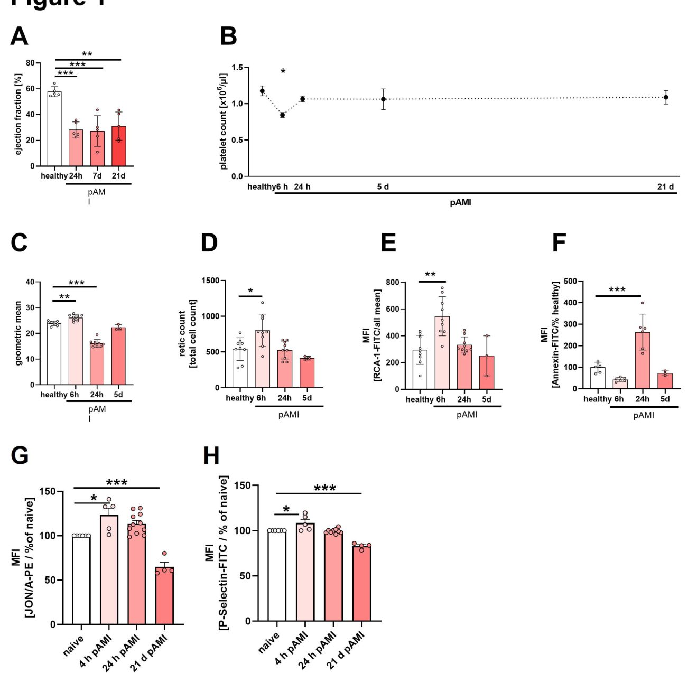
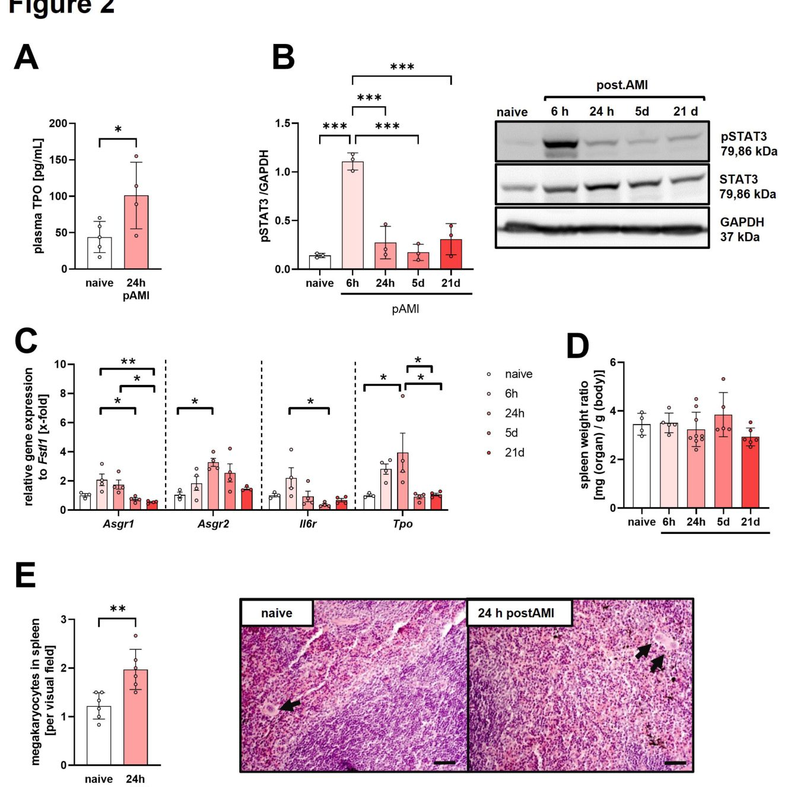
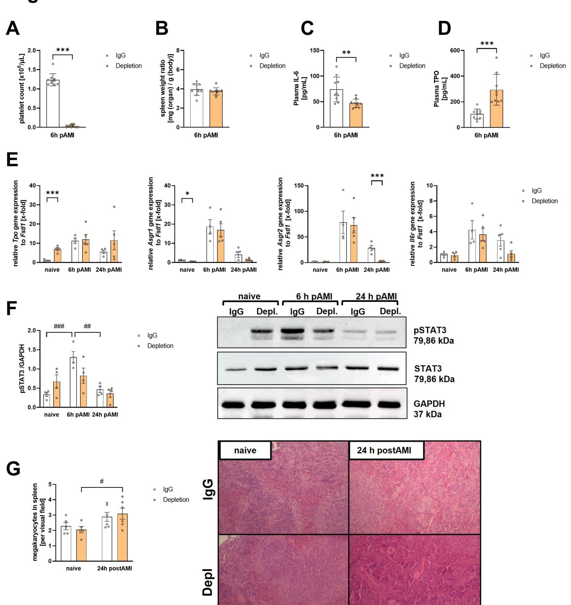
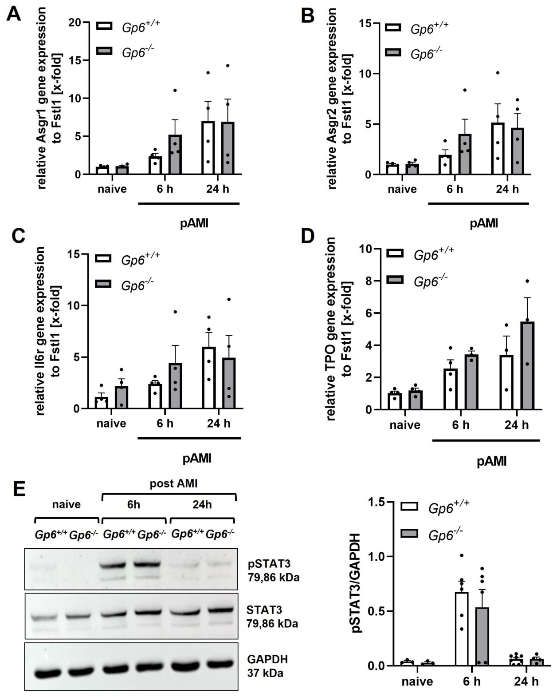

Инфаркттен кейін жүрек бауыр арқылы қанды қалай басқарады
{kind=link}

Жедел миокард инфарктінен кейін ағза қауіпті асқынулардың алдын алу үшін тромбоциттер деңгейін шұғыл қалпына кіріседі. Осы уақытқа дейін сүйек кемігі қан жасушаларының жетіспеушілігі туралы сигналды қалай алатыны жұмбақ болып келді. Тышқандарда жасалған жаңа тәжірибелер бұл процесте бауырдың маңызды рөл атқаратынын көрсетті. Зақымдалған жүрек қабыну сигналдарын жіберіп, бауырды тромбопоэтин гормонын көбірек шығаруға мәжбүрлейді.
Басты ойлар
- Инфаркт қандағы тромбоциттердің жаңаруын тездетеді.
- Бауыр STAT3 сигналдық жолы арқылы тромбопоэтин өндірісін белсендіреді.
- Тромбоциттердің жедел жоғалуы мен рецептор тапшылығы әртүрлі жұмыс істейді.
Толығырақ
Зерттеушілер инфарктен кейінгі алғашқы тәуліктерде тромбоциттер популяциясының өзгеру динамикасын зерттеу үшін тышқандардағы ишемия және реперфузия моделін қолданды. Жануарлардың қанында жас ретикуляцияланған және десиалирленген тромбоциттер санының өскені анықталды, бұл жасушалардың жедел жаңаруын көрсетеді. Тін талдауы бауырда Asgr1/2 және IL-6R рецепторларының белсенгенін, сондай-ақ STAT3 ақуызының фосфорлануы артқанын көрсетті.
Миокард зақымдалғаннан кейін жиырма төрт сағат өткен соң қан плазмасында тромбопоэтин концентрациясы айтарлықтай өсіп, тромбоциттер тапшылығын тез жоюға мүмкіндік берді. GPIbα антиденелері арқылы тромбоциттерді жасанды түрде азайту тәжірибелері бұл реакцияның компенсаторлық сипатын растады. Сонымен қатар, GPVI рецепторы жоқ тышқандарда мұндай өзгерістер байқалмады.
Шектеулер
Зерттеу тышқан үлгілерінде жүргізілгендіктен, қорытындыларды адам физиологиясына тікелей көшіру клиникалық растауды талап етеді.
Мақаланың толық талдауы
Түйіндеме
Ғылыми жұмысқа Дюссельдорф университетінің клиникасы (Германия) жанындағы қан тамыр және эндоваскулярлық хирургия бөлімінің профессоры Маргитта Элверс жетекшілік етеді. Зерттеу әдістемесі, нәтижелері немесе ынтымақтастық туралы барлық сұрақтар бойынша Эксперименталды қан тамыр медицинасы бөліміне (мекенжайы: Moorenstr. 5, 40225 Düsseldorf) хабарласуға болады. Жедел байланыс үшін +49 (0)211 81-08851 телефон нөмірі мен +49 (0)211 81-17498 факс нөмірі қарастырылған.
Түсіндірме
Хат алмасу (Correspondence) — бұл мақала авторларымен байланысудың ресми арнасы, онда зерттеудің дұрыстығы мен ғылыми қауымдастықпен қарым-қатынас жасауға жауапты тұлға көрсетіледі.
Кіріспе
Жүрек-бауыр осі және тромбоциттер реттелуі
Тромбоциттер жедел миокард инфарктінен (МИ) кейінгі тромбо-қабыну процестерінде маңызды рөл атқарады. Зерттеу МИ-ден кейін бауыр тромбопоэтинінің (ТПО) реттелуіне әсерін қарастырады. Тәжірибелер жабайы типтегі, тромбоцитопениясы бар және GPVI жетіспеушілігі бар тышқандарда ишемия/реперфузия (И/Р) зақымдануы моделінде жүргізілді. Тромбоциттердің белсенуі мен алмасуы, сондай-ақ ТПО реттелуіне қатысатын бауыр рецепторлары талданды.
Маңызды
МИ-ден кейін «жүрек-бауыр» осі белсеніп, 24 сағат ішінде плазмадағы ТПО деңгейін арттырады және STAT3 сигналдары арқылы тромбоциттер санын жылдам қалпына келтіреді.
Нәтижелер МИ-ден кейін тромбоциттер алмасуының жеделдегенін, ретикулярлы және десиалданған формалардың көбейгенін көрсетті. Бауырда Asgr1/2 және IL-6R рецепторларының экспрессиясы артып, STAT3 фосфорлануы күшейді, ал көкбауырда мегакариоциттер саны өсті. Тромбоциттердің тапшылығы ТПО-ның компенсаторлық өсуіне әкеледі, бірақ Gp6-/- тышқандарында бұл өзгерістер байқалмайды, бұл жедел тромбоцитопения мен созылмалы рецепторлық жетіспеушілік арасындағы айырмашылықты көрсетеді.
Тромбоциттер физиологиясы және реттелу механизмдері
Тромбоциттер санын тұрақты ұстау (қалыпты жағдайда 150–400 × 10³ мкл⁻¹) қан кету мен тромбоздың алдын алу үшін маңызды. МИ-ден кейінгі алғашқы кезеңде мегакариоциттердің пролиферациясы мен тромбоциттер санының өсуі байқалады.
Түсіндірме
Эшвелл-Морелл рецепторы (AMR) — бауырдағы ASGPR1 және ASGPR2 суббірліктерінен тұратын кешен, ол ескірген тромбоциттерді танып, оларды жою арқылы ТПО синтезін басқаратын JAK2/STAT3 жолын белсендіреді.
ТПО мегакариоциттер дифференциациясының негізгі реттеушісі болып табылады. Тромбоциттер AMR арқылы тазартылады, бұл JAK2-ні белсендіреді. Сонымен қатар, IL-6-ның IL-6R-мен байланысуы STAT3-ті белсендіріп, ТПО mRNA биосинтезін ынталандырады. Авторлар тышқандардағы И/Р модельдері арқылы AMR-IL-6R-STAT3 жолы МИ-ден кейін тромбоциттер гомеостазын сақтауда шешуші рөл атқаратынын растады.
Нәтижелер
3.1 Жедел миокард инфаркті тромбоциттердің жедел жаңаруына әкеледі
C57BL/6J тышқандарында LAD лигациясы арқылы 60 минуттық жедел миокард инфарктісі (ЖМИ) және одан кейінгі 24 сағат, 7 және 21 күндік реперфузия (I/R) жүргізілді. Хирургиялық жарақатты азайту үшін жабық кеуде қуысы моделі қолданылды. Сол жақ қарыншаның дисфункциясы эхокардиография арқылы расталды (Сурет 1A). Тромбоциттер саны I/R-ден кейін тек 6 сағаттан соң айтарлықтай төмендеді, ал 24 сағаттан кейін қалыпқа келіп, 21 күнге дейін тұрақты болды (Сурет 1B). GPIb-оң тромбоциттердің геометриялық орташа көлемі 6 сағаттан кейін ұлғайып, 24 сағаттан кейін азайды (Сурет 1C). Тиазол қызғылт сары бояуымен боялған ретикулярлы тромбоциттер саны 6 сағаттан кейін артты (Сурет 1D). RCA-1 лектині көмегімен жүргізілген талдау 6 сағаттан кейін десиалирленген тромбоциттер үлесінің артқанын көрсетті (Сурет 1E). 24 сағат және 5 күннен кейін айырмашылықтар байқалмады. Annexin-V-оң (апоптозға ұшыраған) тромбоциттер саны 24 сағаттан кейін артты (Сурет 1F). Сонымен қатар, I/R-ден 4 сағат өткен соң, JON-A байланысуы (белсенді αIIbβ₃ интегрині) және P-селектин экспрессиясы арқылы тыныштық күйдегі тромбоциттердің белсенуі анықталды (Сурет 1G-H). 21 күннен кейін базальды белсену бақылау тобымен салыстырғанда төмендеді.
Маңызды
ЖМИ алғашқы 6–24 сағат ішінде тромбоциттер санының уақытша төмендеуіне және олардың жедел жаңаруына әкеледі. [!tip] Ретикулярлы тромбоциттер — бұл сүйек кемігінен жаңа шыққан жас формалар, олардың көбеюі тромбопоэздің күшейгенін білдіреді.
3.2 Ишемия мен реперфузиядан кейін тромбопоэтин экспрессиясының ерте артуы
Біз тромбоциттер санының қалпына келу механизмдерін талдадық. Плазмадағы тромбопоэтин (TPO) деңгейі I/R-ден 24 сағат өткен соң айтарлықтай артты (Сурет 2A). Десиалирленген тромбоциттер бауырдағы AMR рецепторларымен байланысып, JAK2-STAT3 жолын белсендіреді. STAT3 белсенуі I/R-ден 6 сағат өткен соң айтарлықтай артып, 24 сағаттан кейін қалыпқа оралды (Сурет 2B). Asgr1 суббірлігінің экспрессиясы 6–24 сағат ішінде өсу тенденциясын көрсетті, ал Asgr2 24 сағаттан кейін айтарлықтай артты (Сурет 2C). Бауырда IL-6 рецепторы экспрессиясының өсу тенденциясы да байқалды. Tpo экспрессиясы I/R-ден 6 және 24 сағат өткен соң артып, 5–21 күндері төмендеді (Сурет 2C). Соңында, біз AMR/IL-6-STAT3-TPO жолының белсенуі көкбауырдағы мегакариопоэзді ынталандыратынын анықтадық: мегакариоциттер саны айтарлықтай артты, бірақ көкбауыр салмағының дене салмағына қатынасы өзгермеді (Сурет 2D-E).
{kind=link}

Маңызды
ЖМИ-ден кейін бауырдағы AMR-JAK2-STAT3-TPO сигналдық жолының ерте белсенуі көкбауырдағы мегакариопоэзді ынталандыру арқылы тромбоциттер деңгейін қалпына келтіреді. [!warning] Зерттеу тышқан моделінде жүргізілген, сондықтан нәтижелерді адам патофизиологиясына тікелей көшіруде сақтық таныту қажет.
3.3 Жедел тромбоцитопения миокард инфарктінен кейін мегакариопоэзді қоздырады
Десиалирленген тромбоциттердің бауырдағы AMR-IL6R-STAT3 сигналдық жолын белсендірудегі рөлін және тромбоцитопенияның миокард инфарктінен (МИ) кейінгі тромбоциттер айналымына әсерін бағалау үшін біз тромбоцитопениясы бар тышқандар моделін қолдандық. Тромбоциттерді азайтатын антиденелерді енгізу арқылы олардың санын бақылау тобының <1%-на дейін төмендеттік (3A-сурет). Көкбауыр массасында өзгеріс байқалмады (3B-сурет). Тромбоцитопениясы бар тышқандарда плазмадағы IL-6 цитокинінің деңгейі төмендегені анықталды, бұл қабыну процесінде тромбоциттердің маңызды рөлін растайды. Ишемия/реперфузиядан (И/Р) 6 сағат өткен соң, плазмадағы тромбопоэтин (TPO) деңгейі бақылау тобымен салыстырғанда тромбоцитопениясы бар тышқандарда айтарлықтай жоғары болды (3D-сурет).
Маңызды
Тромбоцитопения плазмадағы IL-6 деңгейін төмендетеді, бірақ И/Р-дан 6 сағат өткен соң TPO концентрациясын арттырады, бұл бауырдың компенсаторлық реакциясын көрсетеді.
Бауырдағы Tpo генінің экспрессиясы бастапқы күйде тромбоциттері азайтылған тышқандарда жоғарырақ болды, бірақ И/Р-дан 6 және 24 сағат өткен соң топтар арасында елеулі айырмашылықтар байқалмады (3E-сурет). Дегенмен, И/Р-дан 24 сағат өткен соң, Tpo экспрессиясы тромбоцитопениясы бар тышқандарда жоғары деңгейде сақталды, ал бақылау тобында ол төмендеді. Асиалогликопротеин рецепторының (AMR) Asgr1 және Asgr2 суббірліктерінің экспрессиясы И/Р-дан 6 сағат өткен соң өсті, бірақ 24 сағатқа қарай тромбоцитопениясы бар тышқандарда базальды деңгейге дейін түсті, ал бақылау тобында бұл төмендеу азырақ байқалды (3E-сурет). Бауырдағы STAT3 фосфорлануы И/Р-дан 6 сағат өткен соң IgG бақылау тобында тромбоцитопениясы бар тышқандарға қарағанда айтарлықтай жоғары болды (3F-сурет). Көкбауырдағы мегакариоциттер санында айырмашылық байқалмады (3G-сурет).
Абайлаңыз
Зерттеу тышқандар моделінде жүргізілген, сондықтан нәтижелерді адам ағзасындағы процестерге тікелей көшіру сақтықты талап етеді.
3.4 GPVI-дің И/Р зақымдануынан кейін бауырлық TPO сигналдары арқылы тромбоциттер санын реттеуге әсері
Алдыңғы зерттеулер гликопротеин VI (GPVI)-дің инфарктіден кейінгі жүрек ремодельденуіндегі рөлін анықтады. Біз Gp6+/+ және Gp6-/- (нокаут) тышқандарын салыстыра отырып, GPVI-дің бауырдағы TPO синтезіне әсерін зерттедік. Бауырдағы Tpo, Asgr1, Asgr2 және Il6r гендерінің экспрессиясын талдау көрсеткендей, екі генотипте де И/Р-дан кейін Tpo және Asgr1 экспрессиясының уақытқа тәуелді өсуі байқалды (4A-D-сурет).
Түсіндірме
Нокаут — бұл функцияны зерттеу үшін белгілі бір генді ағзадан алып тастау немесе «өшіру» процесі.
TPO синтезінің негізгі реттеушісі болып табылатын STAT3 фосфорлануы екі топта да И/Р-дан 6 сағат өткен соң айтарлықтай өсті және 24 сағатқа қарай базальды деңгейге оралды. Gp6+/+ және Gp6-/- тышқандары арасында STAT3 белсендірілуінде статистикалық тұрғыдан елеулі айырмашылықтар анықталмады (4E-сурет). Осылайша, GPVI-дің болмауы миокард инфарктінен кейін жүйелі TPO деңгейіне немесе бауырдағы STAT3 белсендірілуіне елеулі әсер етпейді.
Талқылау
Тромбоциттердің гиперреактивтілігі жүрек-қан тамырлары патологияларында, соның ішінде жедел миокард инфарктісінде (ЖМИ) жақсы зерттелген құбылыс болып табылады, мұнда олар реперфузиялық зақымдануды күшейтеді. ЖМИ-ден кейін тромбоциттердің айналымының артуы алыс болжамдардың нашарлауына байланысты ретикулярлы тромбоциттер санының өсуine әкеледі. Біздің жұмыста біз жабайы түрдегі (WT) тышқандарда инфаркттан кейінгі жедел фазада 1 C+D суретте ретикулярлы тромбоциттердің көбейгенін ғана емес, сонымен қатар 1 E+F суретте кәрі тромбоциттер жиілігінің жоғарылауымен тромбоциттер субпопуляцияларының ығысқанын байқадық. Бұл нәтижелер тромбоциттер гемостазының белсенді реттелетінін, ықтимал ЖМИ-ден кейінгі бауырдың тромбопоэтинді (ТПО) реттеуі арқылы жүзеге асатынын көрсетеді. ТПО реттелуін және бұл процестегі тромбоциттердің рөлін зерттеу үшін біз екі модельді қолдандық: (1) жедел тромбоцитопенияны тудыру үшін антиденелер көмегімен тромбоциттерді азайту және (2) созылмалы GPVI тапшылығын бағалау үшін генетикалық түрлендірілген GP6⁻/- тышқандар.
Бауыр тромбоқабынудан кейін тромбоциттерді тазартуда маңызды рөл атқарып, қабыну реакцияларын, соның ішінде ТПО синтезін реттейді. Біздің деректеріміз бауырдағы ТПО экспрессиясы ЖМИ-ден кейін WT тышқандарда күшейген pSTAT3 сигнализациясымен бірге айтарлықтай өсетінін көрсетті. Қызығы, бауыр тініндегі AMR және IL6R экспрессиясы да ЖМИ-ден кейін 2 B-C суретте күшейді. Бұл нәтижелер миокард зақымдануы кезінде жүрек-бауыр байланысын IL-6/STAT3 жолы арқылы реттейтінін көрсететін бұрынғы зерттеулермен сәйкес келеді. Бұл ось гепатоциттердегі минералокортикоидты рецепторларды тікелей тежеп, ЖМИ нәтижесін жақсартады. Тромбоциттер моноциттер мен макрофагтардың IL-6 секрециясын реттейтінін ескере отырып, біз тромбоцитопениялық тышқандарда 3C суретте плазмадағы IL-6 деңгейінің төмендеуін және STAT3 фосфорлануының әлсірегенін байқадық. Тромбоциттердің десиалирленуі AMR арқылы STAT3 белсенділігіне әсер ететіндіктен, реперфузиядан кейін 6 сағат өткен соң бауыр тінінде pSTAT3 күшеюімен қатар десиалирленудің де артқанын анықтадық. Сондықтан тромбоциттердің айналымы десиалирленген тромбоциттердің байланысуы және бауыр тінінің иммуномодуляциясы арқылы тромбоқабынуды күшейте отырып, бауырдың сигналдық жолдарын реттейді деп ұсынамыз.
Маңызды
Тромбоциттері азайған тышқандарда плазмалық IL-6 төмендеуі кезінде ТПО генінің экспрессиясы мен плазмадағы ТПО деңгейі 3D-E суретте компенсаторлы түрде өсті, ал STAT3 дисрегуляциясы 3F суретте сақталды.
Плазмалық IL-6 деңгейінің төмендеуінен басқа, тромбоцитопениялық тышқандар 3D-E суретте ТПО генінің экспрессиясы мен плазмадағы ТПО деңгейінің компенсаторлы жоғарылауын көрсетті. Қызығы, тромбоцитопениядан кейінгі ТПО-ның компенсаторлы өсуі әдеттегі жағдай емес және оның себебіне тығыз байланысты. Иммундық тромбоцитопениясы бар науқастарда ТПО деңгейі күтілгеннен төмен болса, тромбоцитемия ТПО деңгейінің көтерілуіне әкеледі. Бұл тромбоциттер массасы мен плазмалық ТПО деңгейінің кері корреляциясы туралы тұжырымға күмән келтіреді. Дегенмен, бұл тышқандарда STAT3 сигнализациясы бұзылған күйінде қалды, бұл тромбоцитопенияның 3F суретте STAT3 фосфорлануының динамикалық реттелуін бұзатынын білдіреді.
Түсіндірме
Десиалирлену — жасуша бетінен сиал қышқылының қалдықтарын ферментативті түрде алып тастау процесі, бұл олардың бауыр арқылы тазалануын тездетеді.
Алайда ұқсас фенотип жақында тышқандық тромбоцитопения моделінде сипатталған еді. Sun және әріптестері Notch1 сигнализациясы бауыр тінінде ТПО өндірісін реттейтінін дәлелдеді. Олардың моделінде гепатоцит-спецификалық (HC) Notch1⁻/- тышқандарда бауыр тінінде STAT3 фосфорлануы мен ТПО экспрессиясы төмендетілген тромбоцитопения байқалды. HC-Notch1⁻/- тышқандарындағы төмендеген p-STAT3-тен айырмашылығы, біз мұнда ЖМИ-ден кейін 3E суретте ТПО-ға қатысты гендердің экспрессиясына шамалы әсер ететін тромбоциттердің азаюын көрсеттік. Бұл STAT3 реттеу механизмінің күрделірек екенін және ЖМИ-ден кейінгі тромбоцитопенияның қайталама әсері ретінде пайда болатынын көрсетейді.
Керісінше, GP6⁻/- тышқандар 4A-D суретте WT тышқандармен салыстырғанда рецептор немесе ТПО реттелуінде айтарлықтай өзгерістер көрсетпеді, тек ЖМИ-ден кейін ерте кезеңде IL6R экспрессиясында шамалы өзгерістер байқалды, бұл ықтимал GP6⁻/- бауыр тініндегі бастапқы IL6R деңгейінің біраз жоғары болуына байланысты. Сонымен қатар, STAT3 белсенділігінде ешқандай айырмашылықтар байқалмады 4E сурет. Бұл нәтижелер GPVI тапшылығы ЖМИ-ден кейінгі жедел қабыну реакцияларына айтарлықтай әсер етпейтінімен, бірақ тыртық түзілуі сияқты ұзақ мерзімді жүрек ремоделингіне әсер ететіні туралы бұрынғы есептермен сәйкес келеді. Біздің деректеріміз жедел тромбоциттердің азаюы бауырдың ТПО жауабын тудырса да, созылмалы GPVI тапшылығы мұндай реттеуші әсер етпейтінін көрсетеді.
Абайлаңыз
Алынған ТПО жауабы мен сигнализация нәтижелері жедел миокард инфарктісінің тышқандық модельдерінде алынды және оларды адамдарға толығымен экстраполяциялау сақтықты талап етеді.
Көрсетілгендей, көкбауыр ЖМИ-ден кейінгі тромбоциттер динамикасында маңызды рөл атқарады. Көкбауырдан тромбоциттердің босап шығуы айналымдағы тромбоциттердің көлемінің ұлғаюына және ЖМИ-ден кейінгі қабынуға ықпал ететіні көрсетілген. Көкбауырдағы CD41 сигналдары ЖМИ-ден кейін азаяды, бұл тромбоциттердің қан айналымына жұмылдырылуының күшейгенін білдіреді. Тромбоциттердің айналымының артқаны туралы деректерімізді ескерсек, көкбауыр тромбоциттері байқалған субпопуляциялық өзгерістер мен бауырдың ТПО реттелуіне үлес қосуы ықтимал. Біздің зерттеуіміз сондай-ақ GPVI-ға бағытталған терапиялардың тромбоциттер гомеостазына әсер ету мүмкіндігі туралы сұрақтар туындатады. Ревацепт сияқты антитромбоцитарлық терапиялар тромбоцит-эндотелий өзара әрекеттесуін болдырмау арқылы ЖМИ-ден кейін инфаркт көлемін азайтып, жүрек функциясын жақсартатыны көрсетілген. Алайда, GPVI ингибирлеуінің тромбоциттердің өндірілуіне және бауырдың ТПО реттелуіне салдары әлі де түсініксіз күйінде қалып отыр.
Қорытынды
Біздің зерттеуіміз миокард инфарктісінен (МИ) кейінгі тромбоциттер алмасуының динамикалық реттелуі мен бауырдың TPO сигналдық жолдары туралы жаңа деректер ұсынады. Біз өткір тромбоцитопенияның бауырдағы TPO өндірісінің өтемпаз (компенсаторлық) артуына әкелетінін, бұл үрдіске STAT3 сигналының бұзылуы қатар жүретінін көрсетеміз, ал GPVI-дің созынкөй жетіспеушілігі бұл жолдарға айтарлықтай әсер етпейді.
Маңызды
Жедел миокард инфарктісі және тромбоцитопения бауырда TPO синтезінің өтемпаз артуы мен STAT3 бұзылуын тудырады, ал GPVI жетіспеушілігі бұл жүйелерді өзгертпейді.
Сонымен қатар, біздің нәтижелеріміз көкбауырда тромбоциттердің жұмылдырылуы және жүйелік тромбоқабыну реакциялары МИ-ден кейінгі тромбоциттер алмасуы мен бауырдың бейімделуіне ықпал ететінін көрсетеді. Жүрек-қан тамырлары ауруларында GPVI-ге бағытталған терапияның маңызы артып келе жатқанын ескерсек, болашақ зерттеулер олардың тромбоцитарлық гомеостазға, бауырдың TPO реттелуіне және жүректің ұзақ мерзімді нәтижелеріне әсерін зерттеуі тиіс.
Абайлаңыз
Бұл жұмыс тәжірибелік модельдерде орындалғандықтан, алынған деректерді адамдарға тікелей қолдану сақтықты талап етеді және клиникалық тексерулерді қажет етеді.
Tромбоциттер, бауыр сигналдары және көкбауыр динамикасы арасындағы өзара байланысты түсіну миокард инфарктісінен кейін тромбоциттерді қалпына келтіру қабілетін сақтай отырып, тромбоқабынуды азайтуға бағытталған емдеу стратегияларын айтарлықтай жетілдіре алады.
Әдістер
2.1 Жануарлар
Барлық тәжірибелер ARRIVE нұсқаулықтарына және Еуропалық парламенттің зертханалық жануарлармен жұмыс істеу нормаларына, сондай-ақ Германияның жануарларды қорғау заңнамасына сәйкес жүргізілді. Протоколдар Генрих Гейне университетінің және Солтүстік Рейн-Вестфалия үкіметінің этикалық комитеттерімен мақұлданды (рұқсаттар AZ 84-02.04.2015.A558; AZ 81-02.04.2019.A270). Зерттеуде тек Janvier Labs компаниясынан алынған еркек C57BL/6J тышқандары пайдаланылды. GPVI тапшылығы бар (Gp6-/-) тышқандар гетерозиготалы дараларды шағылыстыру арқылы алынды, бұл нокауттық және бақылау (Gp6+/+) топтарын бөліп алуға мүмкіндік берді. Жануарлар 22 ± 1°C температурада және 12 сағаттық жарық циклінде ұсталды, оларға азық пен су еркін қолжетімді болды. Тромбоцитопенияны индукциялау үшін тышқандарға LAD артериясын байлаудан 24 сағат бұрын 2 мкг/г дозада GPIbα антиденелері (#R300) немесе бақылау IgG (#C301) енгізілді. Қан құрамы Sysmex анализаторында бақыланды.
Түсіндірме
Нокаут (Gp6-/-) — бұл белгілі бір ақуыздың (GPVI) синтезіне жауап беретін генді әдейі өшіру арқылы жасалатын генетикалық модификация.
2.2 Жедел миокард инфарктісі (ЖМИ) және реперфузия моделі
Хирургиялық жарақатты азайту үшін жабық кеуде моделі қолданылды. 10–12 апталық еркек тышқандар кетамин (100 мг/кг) және ксилазин (10 мг/кг) қоспасымен жансыздандырылды. Инфаркт сол жақ алдыңғы түсуші артерияны (LAD) 60 минутқа байлау арқылы шақырылды. Реперфузия ЭКГ-дағы ST-сегментінің өзгеруімен расталды. Сол жақ қарыншаның функциясы Vevo 3100 аппараты көмегімен 1, 5 және 21-күндері эхокардиография арқылы бағаланды.
2.3 Тромбоциттер санын өлшеу
Қан үлгілері изофлуран (2–3%) анестезиясы астында ретробульбарлы веналық өрімнен алынды. Қан гепаринді ерітіндіге (20 Ед/мл) жиналып, Sysmex гематологиялық анализаторында талданды.
2.4 Тромбоциттердің ағындық цитометриясы
Қан Tyrode буферінде (pH 7,35) 650 g жылдамдықта 5 минут бойы екі рет жуылды. Тромбоциттердің күйін бағалау үшін ағындық цитометрия қолданылды: жас тромбоциттер тиазол қызғылт сары бояуымен және GPIbα антиденелерімен анықталды. Тромбоциттердің десиалдануы RCA-1 лектинімен, ал фосфатидилсерин (PS) экспозициясы Annexin V байланысуы арқылы анықталды. Деректер FlowJo бағдарламасында талданды.
Түсіндірме
Ағындық цитометрия — сұйықтық ағынындағы жасушаларды талдау әдісі, ол жасуша бетіндегі ақуыздарды және олардың күйін жедел анықтауға мүмкіндік береді.
2.5 Көкбауыр кесінділерінің иммуногистохимиясы
Инфарктен кейін көкбауырлар алынып, парафинге қатырылды және Microm HM355 микротомы көмегімен 5 мкм қалыңдықтағы кесінділерге бөлінді. Гематоксилин және эозинмен боялғаннан кейін, әрбір көру аймағындағы мегакариоциттер саны есептелді.
Бауыр тіннен сандық нақты уақыттағы полимеразды тізбекті реакция (qRT-PCR)
Tpo, Asgr1 (Clec4h1), Asgr2 (Clec4h2) және интерлейкин-6 рецепторының (Il6ra) гендерінің экспрессия деңгейін бағалау үшін миокард инфарктіне дейін, сондай-ақ инфарктен кейін 6 және 24 сағат өткен соң алынған бауырдың жалпы РНК үлгілері пайдаланылды. Бауыр тіні 500 мкл салқын Trizol реагентінде Precellys 24-Dual (Bertin, Майндағы Франкфурт, Германия) гомогенизаторы және Precellys Lysing Kit жиынтығы көмегімен 5000 айн/мин жылдамдықта 30 секунд ішінде ұсақталып гомогенизацияланды. Жалпы РНК-ны бөліп алу Trizol және хлороформ көмегімен экстракция әдісі арқылы жүзеге асырылды. Ол үшін бауыр лизатына 100 мкл хлороформ қосылып, 4°C температурада 18000 g жылдамдықпен 15 минут бойы центрифугаланды.
Жоғарғы сулы фаза жиналып, ДНҚ тұндыру үшін 100% этанолмен араластырылды. Үлгілер өндірушінің нұсқаулығына сәйкес RNAeasy Mini Kit (Qiagen, Хильден, Германия) жиынтығы арқылы тазартылды. Алынған жалпы РНК концентрациясы мен тазалығы Eppendorf BioPhotometer® D30 спектрофотометрі көмегімен өлшенді. КДНҚ синтездеу үшін Reverse Transcription Kit (InPromII Reverse Transcription System; Promega, Вальдорф, Германия) жиынтығымен бірге барлығы 200 нг РНК пайдаланылды. Кері транскрипциядан кейін Fast Sybr Green Master Mix (Thermo Fisher Scientific, Уолтем, АҚШ) көмегімен сандық ПТР амплификациясы орындалды. Мақсатты гендердің экспрессия деңгейі бақылау тобындағы сау тышқандардың Follistatin Like 1 (Fstl1) РНК деңгейіне қатысты нормаға келтірілді. Мәліметтерді талдау үшін ΔΔCT әдісі қолданылды.
Түсіндірме
qRT-PCR әдісі ағзадағы белгілі бір гендердің белсенділігін нақты санмен өлшеуге мүмкіндік береді, бұл инфарктнен кейін бауыр жасушаларындағы өзгерістерді бағалауға көмектеседі.
Бауыр тінін Western Blot (WB) әдісімен талдау
STAT3 ақуызы мен оның фосфорланған түрінің жалпы деңгейін анықтау үшін миокард инфарктіне дейін және кейін алынған бауыр лизаттарына Western Blot талдауы жүргізілді. Ол үшін Cell Signaling Technology (Дэнверс, АҚШ) компаниясының STAT3 (D3Z26) Rabbit mAb (№ 12640) және P-STAT3 (Y705) Rabbit mAb (№ 9145) антиденелері пайдаланылды. Бауыр тіні RIPA буферінде (150 мM NaCl, 50 мM Tris-Base, 0.1% SDS, 0.5% натрий дезоксихолаты, 1% TritonX-100, 1x протеаза тежегіштері, pH=8.0) Precellys 24-Dual гомогенизаторы көмегімен 5000 айн/мин жылдамдықта 30 секунд ішінде гомогенизацияланды.
Ақуыз концентрациясы анықталғаннан кейін үлгілер Laemmli қалпына келтіру буферінде 50 мкг/үлгі концентрацияда дайындалып, 95°C температурада 5 минут бойы денатурацияланды, SDS-полиакриламидті гельде бөлініп, нитроцеллюлозалық мембранаға (GE Healthcare, Херкулес, АҚШ) ауыстырылды. Барлық антиденелер Cell Signaling (Кембридж, Ұлыбритания) компаниясынан алынып, хаттамалар қатаң сақталды. Визуализация үшін мембраналар пероксидазамен коньюгацияланған ешкінің қоянға қарсы IgG (GE Healthcare, Чикаго, АҚШ) және Immobilon Western Chemiluminescent HRP Substrate ерітіндісімен инкубацияланды. GAPDH (14C10, № 2118, Cell Signaling Technology) ақуызы бақылау ретінде қызмет етті.
Ферментпен байланысқан иммуносорбентті талдау (ELISA)
Миокард инфарктінен кейінгі әр түрлі уақыт аралығында тышқандардың қан плазмасындағы IL-6 және TPO цитокиндерінің мөлшерін анықтау үшін гепарині бар қан 650 g жылдамдықта 10 минут бойы центрифугаланып, плазма бөліп алынды. Цитокин мөлшері R&D Systems компаниясының Mouse IL-6 DuoSet ELISA (DY406) және Mouse Thrombopoietin DuoSet ELISA (DY488) жиынтықтары арқылы өндірушінің нұсқаулығына сай өлшенді.
Статистикалық талдау
Барлық тәжірибелер кемінде үш рет қайталанды, мұнда n ретінде жеке жануар алынды. Мәліметтер арифметикалық орташа мәндер мен орташа мәннің стандартты қателігі (SEM) түрінде көрсетілді. Статистикалық талдау GraphPad Prism 9.5.1 (GraphPad Software, Сан-Диего, АҚШ) бағдарламалық жасақтамасы арқылы жүзеге асырылды. Екі топ арасындағы статистикалық айырмашылықтарды бағалау үшін жұптастырылмаған Стьюденттің t-тесті немесе көптік t-тест қолданылды. Үш және одан көп топтарды салыстыру үшін Tukey, Sidak немесе Dunnett түзетулері бар бір факторлы немесе екі факторлы дисперсиялық талдау (ANOVA) орындалды. P < 0.05 мәні статистикалық маңызды деп қабылданды. Барлық графиктердегі жұлдызшалар мен ромбтар айтарлықтай айырмашылықтарды білдіреді (, # p < 0.05; , ## p < 0.01; , ### p < 0.001).
{kind=link}

{kind=link}

Кестелер
Кесте 1. ПТР праймерлері
| Ген | Тікелей праймер | Кері праймер |
|---|---|---|
| Tpo | forward 5´CACAGCTGTCCCAAGCAGTA 3´ | reverse 5´CATTCACAGGTCCGTGTGTC 3` |
| Asgr1 (Clec4h1) | forward 5´ACGTGAAGCAGTTAGTGTCTG 3´ | reverse 5´CCTTCATACTCCACCCAGTTG 3´ |
| Asgr1 (Clec4h2) | forward 5´GCTCAGTGGCGATGATG 3´ | reverse 5´AGAGGCGCTGAGGAAAGG 3´ |
| Il6ra | forward 5´ACCTTCGGCTTCAAAATGCCAGTT 3´ | reverse 5´CACCTAGAAAACCCTGCTGCGA 3´ |
| Fstl1 | forward 5´AGC CCA CGT GCC TCT GCA TT 3´ | reverse 5´GGC TGG CAG ATG GAC TCG CA 3´ |
Зерттеу сызбасы
Препринт әлі рецензиядан өтпеген. Қорытындылар алдын ала.
Дереккөз
| Санат | Препринт лицензиясы |
|---|---|
| molecular biology | все права у авторов |
Дереккөздер
| Дереккөз | Сілтеме |
|---|---|
| Страница препринта | biorxiv.org |
| Полный текст (PDF) | biorxiv.org |
| DOI | doi.org |
| Метаданные Crossref | api.crossref.org |
| Europe PMC | europepmc.org |
| Иллюстрация | commons.wikimedia.org |